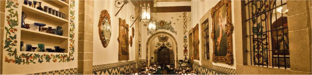
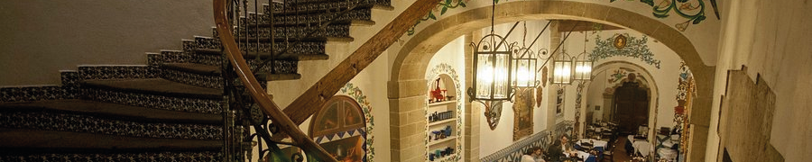
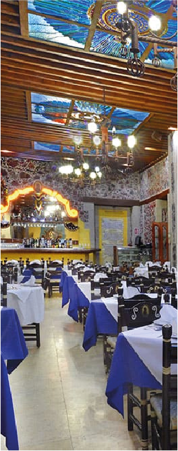

TACUBA


Es uno de los restaurantes históricos más emblemáticos de la Ciudad de México y uno de los más antiguos aún en funcionamiento. Fue fundado en 1912 por Dionisio Mollinedo, originario de Tabasco, en un inmueble ubicado sobre la calle de Tacuba, una de las calles más antiguas del Centro Histórico. Antes de convertirse en restaurante, el edificio había funcionado como lechería y formó parte de un conjunto colonial más amplio.
El lugar ganó fama rápidamente como punto de reunión de intelectuales, políticos, artistas y viajeros. Entre sus episodios históricos más conocidos está el banquete de bodas de Diego Rivera y Guadalupe Marín en la década de 1920. También se dice que numerosos presidentes mexicanos y figuras públicas han comido ahí.
El restaurante ocupa una casona virreinal de origen colonial (siglo XVII) ubicada en la calle Tacuba, una de las vías más antiguas de la ciudad, trazada sobre antiguos caminos de Tenochtitlan. El inmueble conserva muchos rasgos coloniales y ha sido adaptado sin perder su esencia histórica.
Entre sus elementos arquitectónicos y decorativos destacan:
- Patios interiores y corredores típicos de casonas novohispanas
- Muros altos y techos amplios que dan sensación monumental
- Murales, óleos y arte religioso de inspiración colonial
- Talavera y detalles ornamentales mexicanos integrados al interior
- Lámparas clásicas, vitrales y mobiliario tradicional que refuerzan la atmósfera histórica
El espacio está diseñado para sentirse como un viaje al pasado: muchas personas lo visitan no solo por la comida, sino por la experiencia visual e histórica del lugar
